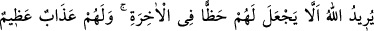
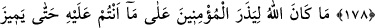

ÎMÂN VE İNKÂR
176. (Rasûlüm!) İnkârda yarışanlar sana kaygı vermesin. Çünkü onlar, Allah’a
hiçbir zarar veremezler. Allah onlara, âhiretten yana bir nasip vermemek istiyor.
Onlar için çok büyük bir azap vardır.
177. Şurası muhakkak ki, îmanı verip inkârı alanlar, Allah’a hiçbir zarar
veremezler. Onlar için elîm bir azap vardır.
178. İnkâr edenler sanmasınlar ki, kendilerine mühlet vermemiz onlar için daha
hayırlıdır. Onlara ancak günahlarını arttırmaları için fırsat veriyoruz. Onlar için
alçaltıcı bir azap vardır.
179. Allah, mü’minleri (şu) bulunduğunuz durumda bırakacak değildir; sonunda
murdarı temizden ayıracaktır. Bununla beraber Allah, size gaybı da bildirecek
değildir. Fakat Allah, elçilerinden dilediğini ayırdeder. O halde Allah’a ve
peygamberlerine îman edin. Eğer îman eder, takvâ sahibi olursanız sizin için de çok
büyük bir ecir vardır.
“İnkâra koşanlar” yani inkâra karşı son derece büyük bir hırs ve şiddetli bir arzu
duydukları için hemen inkâra düşenler ki bunlar; Allah’ın nûrunu söndürmeye çalışıp
kâfirlere arka çıkmak için içlerinde gizledikleri inkâra koşan ve sefere çıkmaktan geri
duran münâfıklardır. “Seni üzmesin, onlar Allah’a” yani Allah’ın ve İslâm dîninin
dostlarına kesinlikle “hiçbir zarar veremezler. Allah, âhirette onlara hiçbir nasip
vermemek istiyor.” Allah bununla, münâfıklara âhirette sevap cinsinden hiçbir pay
ayırmamayı irade ediyor. Bu sebepledir ki onları, küfür üzere helâk olana kadar bu
tuğyânlarında bocalar bir vaziyette bırakıyor. Âyet-i celîlede Allah’ın iradesinin